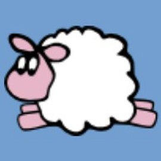
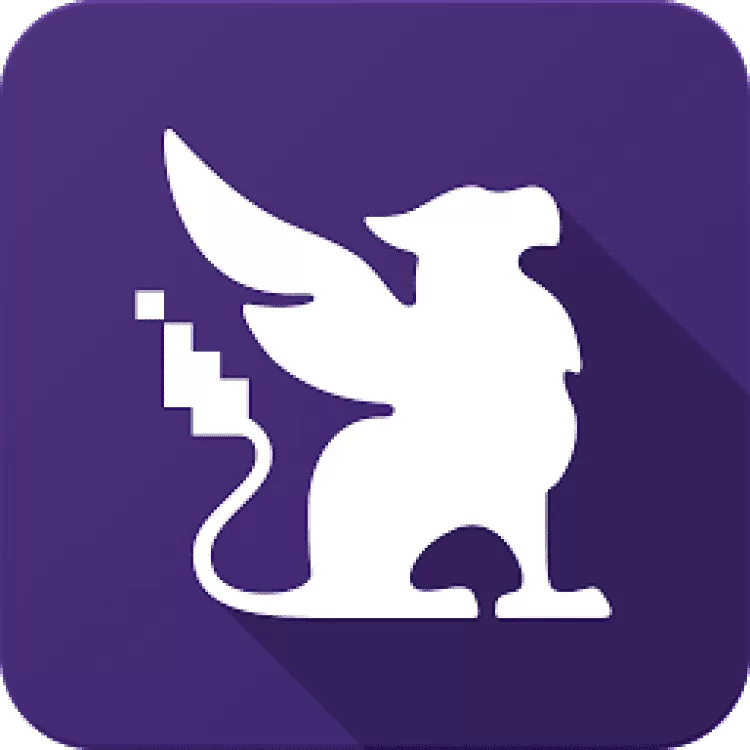
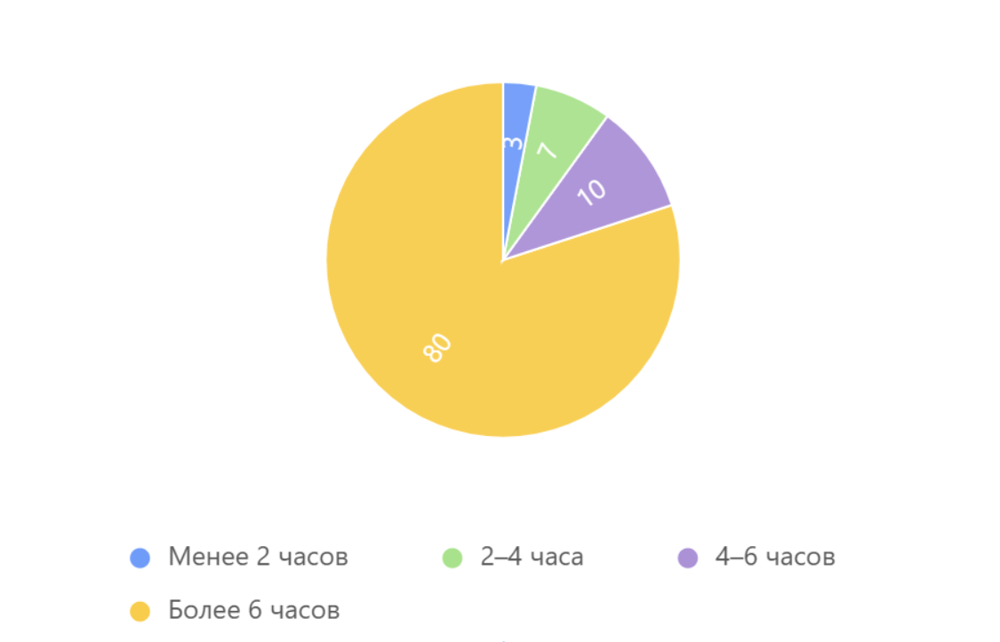
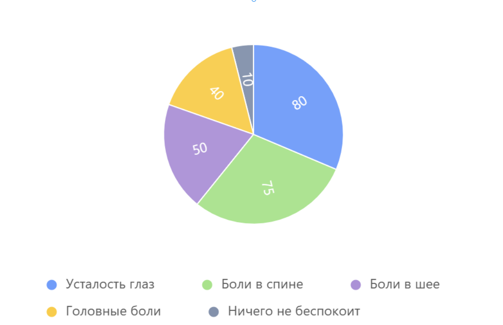
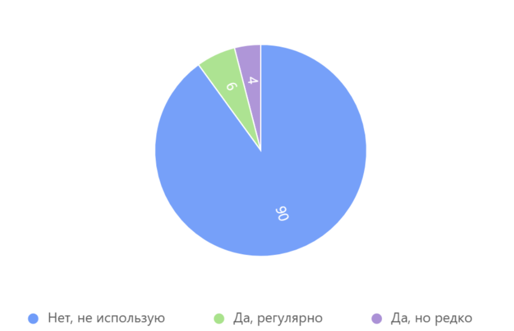

Министерство образования Омской области
Бюджетное профессиональное образовательное учреждение Омской области
«Колледж инновационных
технологий, экономики и коммерции»
ЦМК ФИЗИЧЕСКОЙ КУЛЬТУРЫ, БЖД И ТУРИЗМА
ПРОЕКТ
на тему: Проект по продвижению ЗОЖ и цифровой гигиены
«Инженер здоровых привычек»
Выполнил:
студент гр. 31 ИСР
И.О. Колыванов
Руководитель:
Я. В. Козка, Н.И. Шуваева
Омск, 2026
Презентация
Сайт IT-ЗОЖ
Разработка Веб-приложения «IT-ЗОЖ» для ведения здорового образа жизни обучающихся по специальности: информационные системы и программирование (квалификация – программист)
Основы здорового образа жизни обучающихся по специальности информационные системы и программирование: программист
Существующие решения полезны, но не дают комплексного подхода


Обучающиеся 21 и 22 ИСП



Министерство образования Омской области
Бюджетное профессиональное образовательное учреждение Омской области
«Колледж инновационных
технологий, экономики и коммерции»
ЦМК ФИЗИЧЕСКОЙ КУЛЬТУРЫ, БЖД И ТУРИЗМА
ПРОЕКТ
на тему: Проект по продвижению ЗОЖ и цифровой гигиены
«Инженер здоровых привычек»
Выполнил:
студент гр. 31 ИСР
И.О. Колыванов
Руководитель:
Я. В. Козка, Н.И. Шуваева
Омск, 2026